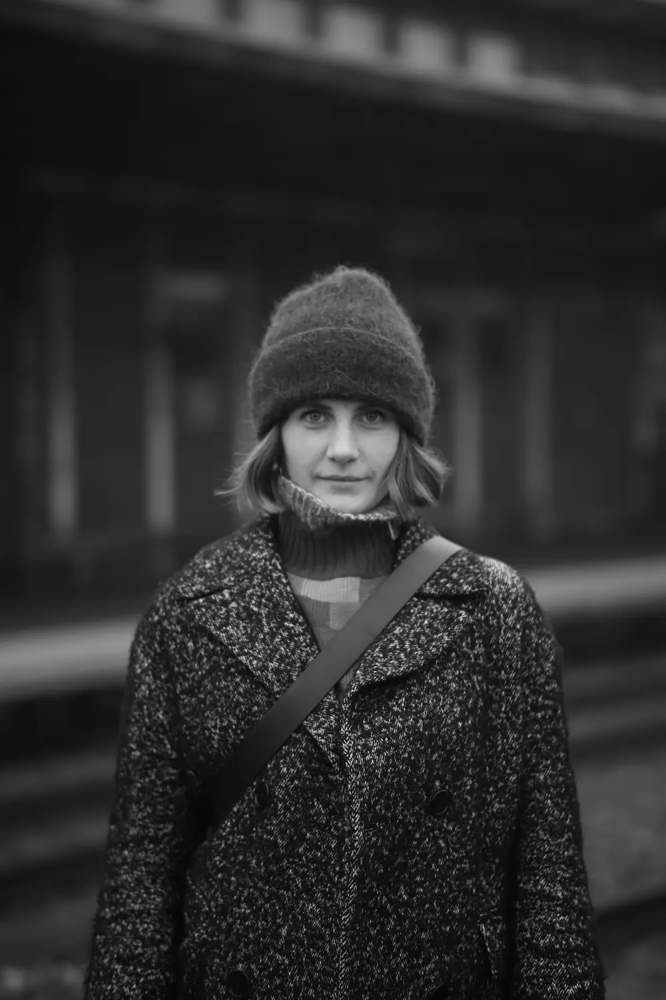
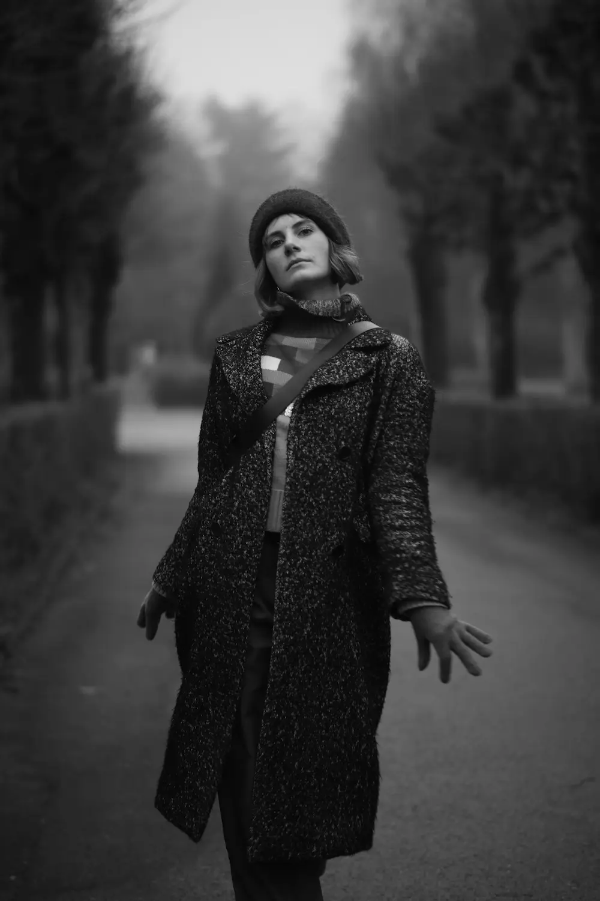

OM MIG

PROFIL
Jeg ser mig selv som kreativ, og jeg elsker designprocessen i alle mine projekter. Visuelt design og brugeroplevelse går hånd i hånd, hvis du spørger mig. Når jeg går i gang med et projekt, bliver jeg inspireret af, hvad jeg ser omkring mig, jeg finder inspiration på Instagram og Pinterest men især også i mine fotografier fra rejser eller bare gåture nede på gaden. Det kan tydeligt ses i mine projekter at fotografiet betyder meget for mig. Jeg har udelukkende brugt egne billeder til alle sites. Min svaghed i webdesign er at jeg lader mig rive med at et flot design fremfor et funktionelt design.
OM
Jeg er multimediestuderende. Jeg startede for et halvt år siden. Førhen har jeg arbejdet med design på forskellige højskoler og kurser. Webdesign er nyt for mig, men jeg blev grebet af det med det samme.
Jeg havde grundviden inden for Adobe programmerne på forhånd, men studiet har styrket mig endnu mere i teknikkerne. Jeg har lært kodesprogene HTML, CSS og JavaScript, hvilket har været interessant, da det giver et syn på det tekniske der ligger bag designet for et velfungerende website. Jeg har lært at kodning på den mest optimale måde er vigtigt for brugeroplevelsen. Jeg arbejder hen imod at skabe mere dynamiske og interaktive sites, da det giver en fed oplevelse. Det er det, jeg mener, webdesign kan når det er bedst, skabe en visuel oplevelse man ikke havde forventet.
MIG
CV 2021 - Kunsthøjskolen i Holbæk, fotokursus
2021 - Modus, designkursus
2022 - Johan Borups Højskole, grafisk designkursus
2023 - KEA MMD, webdesign
Færdigheder inden for:
Grafik - Adobe Illustrator + Photoshop + XD + InDesign
Videoredigering - Adobe Premiere Pro + Audition
Kodning i HTML, CSS og JavaScript - Visual Studio Code